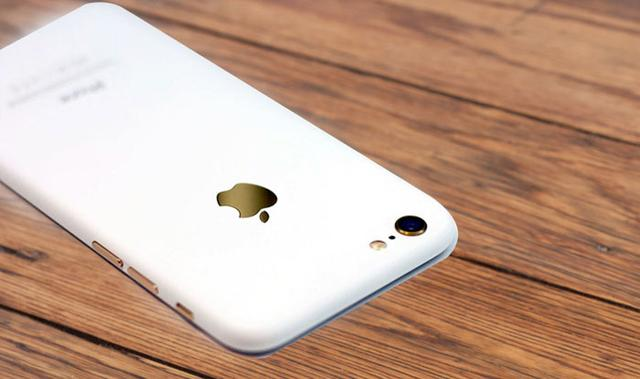
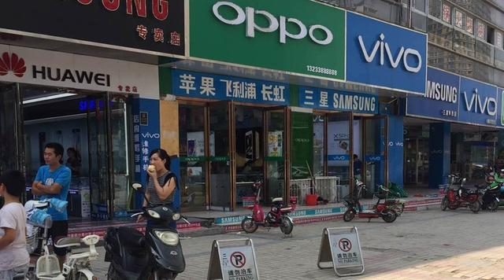
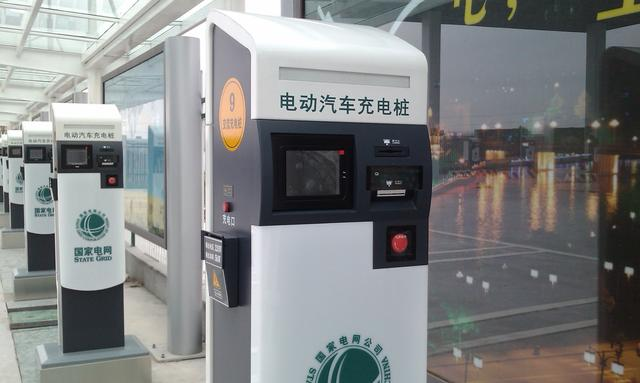
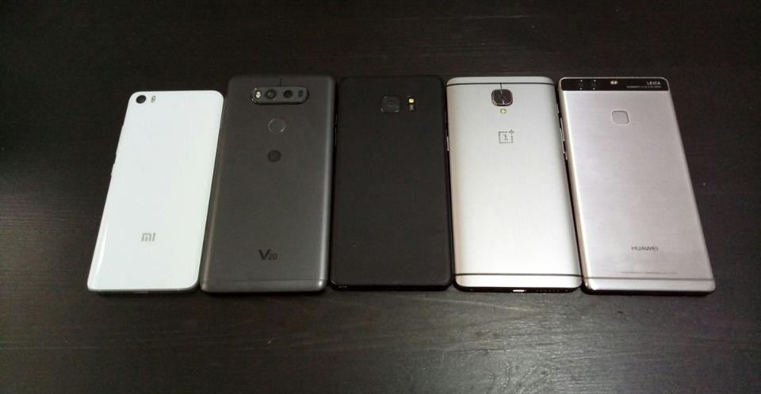
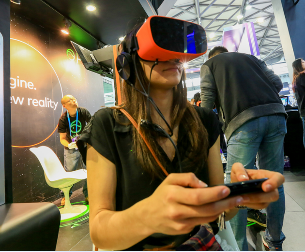
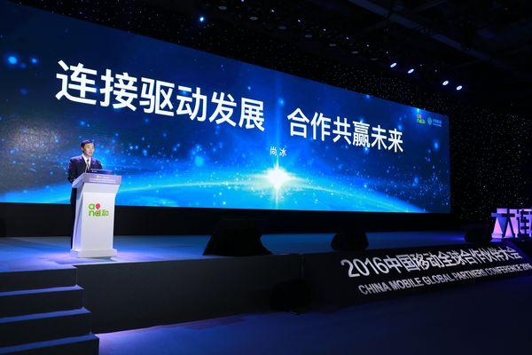

头条
传说中的亮光白iPhone 7实物模型曝光，这可信吗？

据外媒报道，周二网上出现一段关于亮光白iPhone 7和iPhone 7 Plus外壳实物模型的视频。这段视频是由苹果产品爆料者桑尼·迪克森（Sonny Dickson）周二发布在Twitter网站上的，视频中显示的白色外壳似乎是第三方厂商定制的外壳，可能是从阿里巴巴或类似的亚洲市场上买到的。虽然这款白色外壳几乎是专门按照iPhone 7系列产品的设计而定制的，但是某些关键细节上的差异说明视频中的外壳只是实物模型而不是原型硬件。例如，iPhone 7原型机的外壳上有一个苹果LOGO图案的开口，其中填充的是无线电可以穿透的材料；而视频中的外壳实物模型没有这样的开口。

同属于“步步高系”，OPPO和vivo手机2016年销量增长迅速，超越小米和联想，成为全球市场前四、前五名，在国内则与“华为系”分庭抗礼，占据前三甲。11月，vivo高级副总裁胡柏山接受媒体采访时透露，按市场实销量vivo 2016年内部统计增长率约为73%，这与外部第三方统计机构统计的100%增长有所出入。此涨幅帮助vivo2016年销量达到7500万台左右。“我们按照行业占比来算预期量”，胡柏山说。比如中国一年销售4亿始手机，vivo占据15%，则有6000万台。他认为vivo在2016年赶上一个大利好，2014年10月起大量推出的4G手机，经过12~18个月后，进入换机潮，vivo赶上了机会，自身市场表现好过年初预计的30%，达到国内市场5亿部的15%，算下来是7500万台以上销量。此外还有很多外部利好叠加，比如三星note 7自燃、小米为代表的互联网手机下滑（一些互联网小众品牌干脆关门）、苹果手机创新乏力等因素，使得OPPO获得更好业绩，业内普遍预计其年销量超过9000万台。
罗永浩说：创业过程中一点心塞都没有也不是。但就像马云马老师说过的：“企业家的胸怀，都是被委屈撑大的”。我以前在互联网上吵架是从没输过的，但经过做企业这四年半的血雨腥风，我的心胸已经大到了我历史上所有的敌人都跑到我的心胸里，我还是会觉得里面很空旷。和平年代，没有什么比做公司，做企业更锻炼人的了，从这个意义上，我感谢生活给了我这么一个机会锻炼自己。其实做手机这四年是我职业生涯最幸福的四年，没有什么特别痛苦的，有的时候会有一点累，还有一个就是时间总是不够用，所以冬天洗澡只能两天一次。总之相对于这四年半创业的幸福，那点劳累没什么。
充电桩故障、充电车辆长时占桩、充电桩无电状态、充电App信息更新不及时、充电定位有误、充电桩布局不合理等状况并不是个案，新能源汽车车主的用车情况并不乐观。12月26日，北京市今年最后一轮小客车指标摇号举行，19987人申请示范应用新能源小客车指标，但可分配的指标数只有2648个。换句话说，2017年5.1万个个人新能源车指标中，将有17339个指标优先配置给2016年的申请者，约占三成。

外媒刊文称，电池续航时间一直是手机的老大难问题。此前的手机电池一般很难支撑一天时间，这使得移动电源成为用户随身携带的产品。不过，今年的情况有所改观。华为、小米、LG等公司推出的手机足够用上一天时间，甚至超过一天。如果要找出今年Android手机厂商共同取得最大进步的一个领域，它就是电池续航时间。

工信部近日正式发布《移动智能终端应用软件预置和分发管理暂行规定》，其中规定手机除了基本功能之外的应用软件（APP）应确保可卸载，且不得擅自收集使用用户个人信息。该规定将于2017年7月1日起实施。这里的“基本功能软件”是指保障移动智能终端硬件和操作系统正常运行的应用软件。主要有四类：一是操作系统基本组件；二是保证智能终端硬件正常运行的应用软件，如蓝牙、GPS、指纹传感器应用等；三是基本通信应用软件，如短信、拨号、联系人等；四是应用软件下载通道类型的软件，如应用商店等。简单来说，手机预装的第三方软件必须可卸载。该《规定》要求手机厂家应约束销售渠道，未经用户同意不得擅自在移动智能终端中安装APP，并提示用户终端在销售渠道等环节被装入应用软件的可能性、风险和应对措施。
人工智能已经正式走入主流。美国市场研究公司Gartner已经连续第二年将人工智能列为第一大战略性技术。谷歌、IBM、Salesforce和苹果等公司对私有人工智能公司的收购也在不断升温——2016年就有40笔与人工智能相关的收购交易。我们的研究也发现，62%的大企业将在2018年前使用人工智能技术。由于大家都在谈论广义的人工智能，所以我们也将今年的预测重点放在沟通和人工智能上。
10月下旬，媒体报道暴风魔镜出现裁员。11月上旬，暴风魔镜CEO黄晓杰发公开信表示，通过拆分和裁员，暴风魔镜曾超过500人的队伍，现在有300人，今后将聚焦在最核心的软硬件平台上。裁员两个月左右后，暴风魔镜的方向调整已能看出些许端倪，其改变了以往只出VR眼镜的产品策略，推出了一款面向移动端的一体机。对此，暴风集团CEO冯鑫日前预测称，明后两年VR巨头会全面进军移动，一体机将成为热点。此前，一位不具名的VR投资人接受《每日经济新闻》记者采访时分析称，暴风魔镜过去虽想做生态做平台，但没能在这一维度建立起壁垒，加上短时间内招人过多，调整方向后需要更踏实走好每一步。

在广州举行的中国移动合作伙伴大会上，中国移动总裁李跃宣布，将于2017年开始5G大规模外场实验。尽管中国进入4G只有3年，三大运营商4G的全面高速发展只有2年，但5G的加速部署预期似乎已经形成。“各方对5G标准的制定事实上是互相妥协的心态，再加上我们看到一些运营商着急部署5G，特别是美国的因素，我们看到5G发展的确比想象中的要快。”12月20日，爱立信中国CMO常刚在接受第一财经记者采访时表示。
